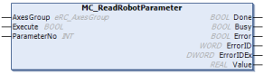

ID : 7603
MC_ReadRobotParameter
一般的なロボットの使用条件として設定するパラメータを読込みます。
| グラフィック表示 | FBカテゴリ |
|---|---|
|  | 非動作 |
入出力変数
| 変数名 | データ型 | 有効範囲 | 初期値 | 省略 |
|---|---|---|---|---|
| AxesGroup | eRC_AxesGroup | 不可 | ||
|
||||
入力変数
| 変数名 | データ型 | 有効範囲 | 初期値 | 省略 |
|---|---|---|---|---|
| Execute | BOOL |
|
FALSE | 不可 |
|
||||
| ParameterNo | INT | 1以上 | 1 | 不可 |
|
||||
出力変数
| 変数名 | データ型 / 説明 |
|---|---|
| Done | BOOL |
|
|
| Busy | BOOL |
|
|
| Error | BOOL |
|
|
| ErrorID | WORD |
|
|
| ErrorIDEx | DWORD |
|
|
| Value | REAL |
|
機能説明
初期値は機種毎に異なります。下記はVSの例です。
| 番号 | 表示 | 単位 | 初期値 | 内容 |
|---|---|---|---|---|
| 1 | 先端負荷質量 | g | 4000 | ツールとワークの合計質量 |
| 2 | 負荷重心位置X | mm | 0 | ツールとワークを合わせた負荷の重心位置X成分 |
| 3 | 負荷重心位置Y | mm | 80 | ツールとワークを合わせた負荷の重心位置Y成分 |
| 4 | 負荷重心位置Z | mm | 100 | ツールとワークを合わせた負荷の重心位置Z成分 |
| 5 | 負荷重心イナーシャIx | kgcm² | 0 | ツールとワークを合わせた負荷の重心位置X軸周りの慣性モーメント |
| 6 | 負荷重心イナーシャIy | kgcm² | 0 | ツールとワークを合わせた負荷の重心位置Y軸周りの慣性モーメント |
| 7 | 負荷重心イナーシャIz | kgcm² | 0 | ツールとワークを合わせた負荷の重心位置Z軸周りの慣性モーメント |
| 8 | 最適速度制御設定 | - | 0 | 0：無効 1：PTP 2：CP 3：PTP・CP |
| 10 | 床置き,天吊り設定 | - | 0 | 0：床置 1：天吊り 2：壁掛け（下） 3：壁掛け（左） 4：壁掛け（右） |
| 11 | 重力補償設定 | - | 0 | 0：重力補償機能を無効 1：重力補償機能を有効 |
| 12 | たわみ補正機能有効設定 | - | 0 | 重力によるロボットアームのたわみを動作位置、姿勢、負荷状況に応じ自動的に補正 0：無効 1：有効 |
| 14 | TOOL・WORK復帰設定 |
- | 0 |
有効にした場合、コントローラ電源ON時、前回コントローラ電源OFF時のTOOL、WORK番号で復帰します。 (注：RC7MのTOOL・WORK復帰条件に相当） |
| 15 | TCP速度設定切替 | - | 1 | 0：回転動作依存 1：速度一定 |
| 16 | ティーチチェック時加減速度低減設定 | - | 1 | 0：一乗 1：二乗 |
| 17 | 停止時許容角度(J1) | deg | 0.01099 | |
| 18 | 停止時許容角度(J2) | deg | 0.00879 | |
| 19 | 停止時許容角度(J3) | deg | 0.00997 | |
| 20 | 停止時許容角度(J4) | deg | 0.01099 | |
| 21 | 停止時許容角度(J5) | deg | 0.00845 | |
| 22 | 停止時許容角度(J6) | deg | 0.01758 | |
| 23 | 停止時許容角度(J7) | mm | 0.12207 | |
| 24 | 停止時許容角度(J8) | mm | 0.12207 | |
| 25 | 動作終了タイムアウト | ms | 5600 | 動作命令の「@E」または「@C」を指定した時、指定時間以内に収束しない場合エラーとなる |
| 26 | 制御ログ記録時間 | s | 10 | |
| 27 | 制御ログ記録間隔 | ms | 8 | 制御ログの記録間隔。 設定値：8、16、24、32 ms |
| 34 | 正方向ソフトウェアリミット(J1) | deg | 170.000 | |
| 35 | 正方向ソフトウェアリミット(J2) | deg | 120.000 | |
| 36 | 正方向ソフトウェアリミット(J3) | deg | 151.000 | |
| 37 | 正方向ソフトウェアリミット(J4) | deg | 270.000 | |
| 38 | 正方向ソフトウェアリミット(J5) | deg | 120.000 | |
| 39 | 正方向ソフトウェアリミット(J6) | deg | 360.000 | |
| 40 | 正方向ソフトウェアリミット(J7) | mm | 500.000 | |
| 41 | 正方向ソフトウェアリミット(J8) | mm | 500.000 | |
| 42 | 負方向ソフトウェアリミット(J1) | deg | -170.000 | |
| 43 | 負方向ソフトウェアリミット(J2) | deg | -120.000 | |
| 44 | 負方向ソフトウェアリミット(J3) | deg | -120.000 | |
| 45 | 負方向ソフトウェアリミット(J4) | deg | -270.000 | |
| 46 | 負方向ソフトウェアリミット(J5) | deg | -120.000 | |
| 47 | 負方向ソフトウェアリミット(J6) | deg | -360.000 | |
| 48 | 負方向ソフトウェアリミット(J7) | mm | 0.000 | |
| 49 | 負方向ソフトウェアリミット(J8) | mm | 0.000 | |
| 50 ～ 57 |
ゲイン減少割合（J1～J8) | % | 0 | 該当軸（1～8軸）のゲイン減少割合を設定 |
| 60 | 特異点回避機能有効設定 | - | 0 | 0：無効 |
| 78 | 周囲環境温度 | degC | 40 | 周囲環境の温度に合わせて設定。温度変動が激しい場所では、最高時の周囲環境温度を設定 －注意事項－ 周囲環境温度が正しく設定されていない場合、ロボットが異常停止することがあります。また、実際の周囲温度より設定温度が低い場合、ロボットが故障する可能性があります。 |
| 82 | 再起動時のパス動作継続設定 | - | 0 | パス動作中に停止処置が行われた場合の再起動時の動作目標位置の設定 0：パス動作後の目標位置への動作（デフォルト） 1：パス動作前の目標位置への動作 |
| 83 | パス動作完了範囲 | mm | 5 | 再起動時にパス動作前の目標位置へ動作しないための条件 目標位置からの距離で設定 |
| 108 | 停止時許容位置 | mm | 0.100 | |
| 109 | 停止時許容姿勢 | deg | 0.100 | |
| 110 ～ 117 |
位置ずれ検出アーム許容範囲（J1～J8) | deg | 10.000 | |
| 118 | TakeArm時経路点クリア設定 | - | 1 | TakeArm時に実行する自由曲線の通過点消去処理の有効、無効を設定します。 0：有効 1：無効 |
| 119 | 非常停止不一致検出無効化 | - | 0 | 検出を行うか否かを指定します。セーフティI/Oレス仕様の場合に有効です。 0：検出 1：無効 |
| 120 | 非常停止不一致検出周期 | s | 0.5 | 検出を行う場合の検出時間を指定します。セーフティI/Oレス仕様の場合に有効です。 |
| 123 | 防護停止不一致検出無効化 | - | 0 | 検出を行うか否かを指定します。セーフティI/Oレス仕様の場合に有効です。 0：検出 1：無効 |
| 124 | 防護停止不一致検出周期 | s | 0.5 | 検出を行う場合の検出時間を指定します。セーフティI/Oレス仕様の場合に有効です。 |
| 136 | 熱膨張補正 | - | 1 | 0：OFF 1：ON |
| 137 | 高軌跡制御モード | - | 0 | 対象は4軸ロボットのみです。 0：標準 1：高速時精度向上 |
| 141 | 起動時手動モード | - | 1 | コントローラ立上げ時の手動動作のモードを指定します。 |
| 142 | 起動時TOOL番号 | - | 0 | コントローラ立上げ時のTOOL番号を指定します。 TOOL番号：0～63 |
| 143 | 起動時WORK番号 | - | 0 | コントローラ立上げ時のWORK番号を指定します。 WORK番号：0～7 |
| 149 | ロボット軸無限回転(J6) | - | 0 | 0：無効 1：有効 2：有効 ロボット停止時に自動で現在角度を±360(deg)以内に変更 |
| 152 | 力覚センサ使用状態 | - | 0 | システムで力センサを使用する場合、有効に設定します。 0：無効 1：有効 |
| 153 | b-CAP Slave速度 | - | 0 | 詳細は「b-CAP通信仕様書 RC8用」の「4.7 指令速度/加速度の限界値に関する設定」を参照してください。 0：サーボ限界 1：サーボ限界（外部速度連動） 2：指令限界 3：指令限界（外部速度連動） |
| 171 | 手先エンコーダ値確認動作停止判定モード | - | 0 | 0：即時判定。目標位置に到達した後、すぐに次行を実行します。 1：速度判定。目標位置に到達した後、現在速度で指定時間移動後も目標位置に留まると推定される場合に、次行を実行します。 2：時間判定。目標位置に到達した後、指定時間ずっと目標位置に留まっていた場合に、次行を実行します。 |
| 172 ～ 179 | 各軸エンコーダ値確認動作停止判定モード | - | 0 | 0：即時判定。目標位置に到達した後、すぐに次行を実行します。 1：速度判定。目標位置に到達した後、現在速度で指定時間移動後も目標位置に留まると推定される場合に、次行を実行します。 2：時間判定。目標位置に到達した後、指定時間ずっと目標位置に留まっていた場合に、次行を実行します。 |
| 180 | 手先エンコーダ値確認動作停止判定時間 | ms | 16 | 手先エンコーダ値確認動作停止判定で、速度判定もしくは時間判定の場合に、判定に使用する時間を指定します。 |
| 181 ～ 188 | 各軸エンコーダ値確認動作停止判定時間 | ms | 16 | 各軸エンコーダ値確認動作停止判定で、速度判定もしくは時間判定の場合に、判定に使用する時間を指定します。 |
| 189 | 特異点回避レベル設定 | - | 0 | 特異点回避判定を変更します。 0：始終点の形態で判定 1：始終点の形態(ただしJ4,J6のSingle,Double,Tripleは除く)で判定 |
| 190 | 起動時BASE番号 | - | 0 | コントローラ立上げ時のBASE有効、無効を指定します。 0：無効 1：有効 |
| 215 | 高軌跡制御有効設定 | - | 0 | 高軌跡制御機能の有効、無効を指定します。 |
| 217 | 制振機能Ｍ有効設定 | - | 0 | 制振機能Ｍの有効、無効を指定します。 0：無効 1：有効 |
| 218 | 起動時簡単設定画面表示 | - | 1 | コントローラ立上げ時に簡単設定画面を表示する/しないを設定します。 |
| 220 | Payloadコマンド設定 | - | 0 | Payloadコマンドの引数（重心とイナーシャ）省略時の挙動を設定します。 0：0を代入 1：現在値保持 |
221 |
ForceSensorPayLoadコマンド設定 | - | 0 | ForceSensorPayLoadコマンドの引数（重心とイナーシャ）省略時の挙動を設定します。 0：0を代入 1：現在値保持 |
225 |
最適動作付加軸同期互換モード （Ver.2.4.*以降） |
- | 1 | 最適速度制御機能のモード1、3における、目標位置の付加軸オプションを使用した時のロボットの挙動を設定します。 0：Ver 2.4.0 以上 1：Ver 2.4.0 未満 |
| 253 | 自由曲線開始位置指定 |
- | 0 | MoveS開始時に現在位置が最初の経路点であるかをチェックする設定を行います。 「1:有効」の場合、現在位置が最初の経路点でない場合、動作開始時にエラーが表示されます。 また、「1:有効」の場合、経路点設定画面で自由曲線動作を選択した場合、実行方法と動作方向が選択できます。 詳細は「経路点確認手順」の "自由曲線の動作手順" を参照してください。 0 : 無効 |
264 |
天吊り時動作範囲修正モード |
- | 1 | HSRシリーズ天吊り設置タイプの動作範囲を修正します。 修正内容：シャフト端部及びジャバラとベース部分との接触を回避させる。 詳細は "HSRシリーズ：天吊りタイプ" を参照してください。 0 : 無効 |
注意事項
-
ID : 7603